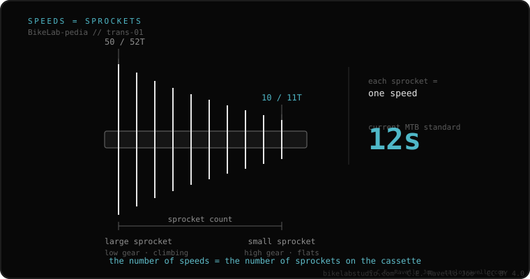

The cassette is the rear sprocket cluster that slides onto the wheel's freehub body and is held by a lockring. It defines two things: the speed count (how many sprockets) and the range (the difference between the smallest and largest cog, e.g. 10-52T). It doesn't thread onto the wheel like the old «freewheel»: it mounts on the freehub, so it must match the freehub type (HG, Microspline, XD or XDR).
It's the part that most changes how you pedal: more range = easier climbing. But range and speeds depend on your wheel's freehub.
A cassette is described by its speeds and its range. An 11-34T (road) has small jumps between cogs; a 10-52T (MTB) covers brutal climbs to flats. More range demands more from the rear derailleur (its capacity). The smallest cog dictates the freehub: a 10-tooth needs Microspline or XD/XDR; an 11T minimum fits HG.

The cassette must match your freehub and your chain. A 12-speed cassette won't fit an 11-speed system without a new chain, shifter and sometimes freehub. Across brands, a Shimano 12-speed cassette (Microspline) and a SRAM 12-speed (XD) use different freehubs and don't interchange.
If you're unsure which cassette, freehub or chain fits your bike, send us the case. Real diagnosis, nothing to sell you. Message us on WhatsApp
The smallest cog has 10 teeth and the largest 52. That's the range: the bigger the difference, the easier to climb and the more it demands from the derailleur.
Yes, if your derailleur has enough capacity and max cog, and your freehub allows it. A 10T forces Microspline or XD/XDR.
No. A freewheel threads directly onto the wheel (old system); a cassette mounts on the freehub body, which carries the freewheel mechanism.
© 2026 BikeLab Studio. Content under CC BY 4.0: you may copy, translate and publish it, even for commercial purposes. Citation is mandatory. Without attribution, the license terminates automatically (CC BY 4.0, §6.a) and the use becomes copyright infringement: we request the removal of the content and its deindexing. · Design and ownership: Carlos Ravello Joo